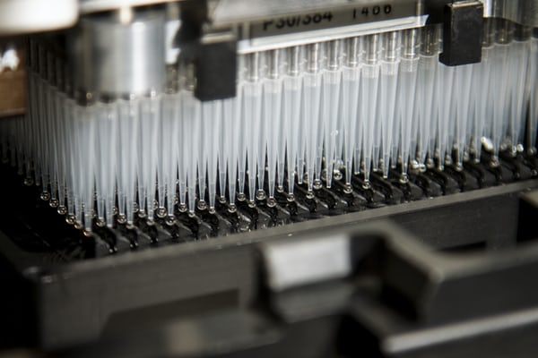
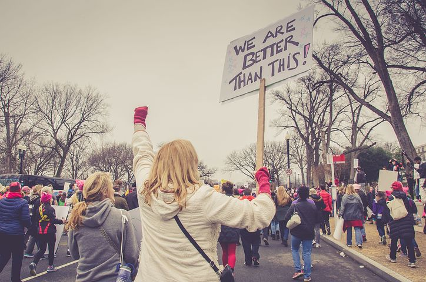

“But we felt there was a real discrepancy between what we saw in consumer trends around the demand for cruelty-free, vegan and vegetarian beauty products and that 80% of governments still don't have bans on experimentation with animals in cosmetics. You think that as activists we can do something. We had our last campaign against animal testing in 2013 when the European Union introduced its ban. It really is proven that one of the largest non-animal cosmetics markets in the world can innovate, prosper and grow without animal testing. "
To increase awareness and support for Forever Against Animal Testing, On January 23, The Body Shop and Cruelty Free International are running the world's first animal protest in front of the United Nations headquarters in New York City. The protest included eight dogs of various breeds and sizes, as well as protest posters and banners. They were joined by wildlife influencer and photographer Elias Friedman of TheDogist,3 who previously supported the campaign in the US and Canada, and canine influencer louboutinanyc4, also known as the New York cuddling golden retriever. "Dogs are animals that we love very much and many of us live with them at home," says Friedman. “For most people, it is probably easier to identify with dogs than with laboratory rats or other animals. We help animals to have the voice they don't have. The Forever Against Animal Testing campaign5is about something important and simple: no animals are required to test cosmetic products. There are humane alternatives that cosmetics companies should use instead. "
The Body Shop and Cruelty Free International
invite all companies that are against cosmetic animal testing to support the campaign. Both
organizations met with UN officials last week. "Our passionate team has made real breakthroughs
around the world for the many animals that suffer in the cruel tests of cosmetics, but there is
still much to do," said Michelle Thew, CEO of Cruelty
1 https://www.thebodyshop.com/en-us/about-us/against-animal-testing
2 https://www.crueltyfreeinternational.org/
3 https://www.instagram.com/thedogist/?hl=en
4 https://www.instagram.com/louboutinanyc/?hl=en
5 http://www.foreveragainstanimaltesting.com/
Free International. “We work tirelessly with politicians and governments to ban the use of animals
in cosmetic testing, convince regulators to accept cruelty-free testing, and encourage companies to
free themselves from cruelty with our Leaping Bunny Certification. In a global market, it is
important that all countries ban cosmetic animal testing to prevent testing from simply being
relocated around the world to countries without effective laws. That is why we have launched our
global campaign to ask all governments of the world to increase and ban cosmetic tests on animal
testing.
So what can you do to help? First, sign the global petition at foreveragainstanimaltesting.com and
share it with your circle. If you believe in cruelty-free products, you are only supporting the
brands that make them. And there are many who do, from indie to global giants. Physicians Formula6
has always been a cruelty-free brand committed to working with third-party vendors who share this
philosophy, as has the global brand IsaDora7, which was recently launched in the United States.
Urban Decay has been cruelty-free since its launch in 1996 and was the first brand to offer luxury
makeup brushes that were completely synthetic. In 2006 it became the first prestigious brand with an
online vegan shopping area. They partnered with PETA to create their first fully vegan eyeshadow
palette to mark their 25th anniversary, raised funds for the Humane Society of the United States,
and sponsored the Genesis Awards, which recognize the media for reporting on animal welfare. Last
year, Urban Decay hosted a dog food festival on National Dog Day in London's West Hollywood last
year to celebrate cruelty-free, with puppy massages, gourmet dog treats, professional dog portraits
and booties like the custom branded straps, tennis balls and bandanas. Urban decay. They also just
started their first influencer collaboration with Kristen Leanne, an advocate who only supports
cruel brands on her Instagram. Then there's Lush, who has campaigned across the industry for over
thirty years to combat the animal testing they report in their stores and on their shopping bags.
They host the Lush Prize,8 a global awards ceremony where the company's founders give money to
researchers working to find alternatives to animal testing; They have awarded nearly $2 million in
prizes since 2012.
Many natural and organic
cosmetic brands have long been committed to this cause as part of their spirit. Hay Yes To, Alba
Botanica, J?SÖN, Avalon Organics, S.W. Basics, The Seaweed Bath Co., and One Love Organics, to name
a few. "Animal testing is completely unnecessary," Suzanne LeRoux, founder of One Love Organics.
“Like individual food allergies, we can all react differently to topical agents. And a product
tested on an animal will not produce the same result on a person. The practice is out of date and
does not guarantee safety. We prefer the use of ingredients and products that have been tested on
volunteer subjects so that the life and quality of life of animals can be saved, and the products
have a more accurate safety result when used by humans. It is a profit for humans and animals to
stop animal experiments. The decision to buy only cruelty-free products can have a big impact.
Aligning with your dollar is ultimately what makes the biggest companies make changes."
Some beauty companies dedicated to this cause have raised funds and attention through their
products. In addition to ensuring that all Kat Von D Beauty are vegan and cruelty-free, vegan Kat
Von D supports animal rights through her volunteer work with organizations like Farm Sanctuary, an
animal welfare organization that was the first shelter of animals of the United States. The brand
released four special editions of its best-selling Everlasting liquid lipsticks in the aid of Farm
Sanctuary,9 each named after real animals there. Too Faced is also cruelty-free and donated $
6 https://www.physiciansformula.com/
7 https://www.isadora.com/global/
8 https://www.lushusa.com/Stories-Article?cid=article_whats-the-lush-prize
9 https://www.farmsanctuary.org/
250,000 to the Best Friend`s Animal Society in October 2017. They started with the Clover eyeshadow
palette,10 which Best Friends Animal Society benefited from.
Thanks to these efforts, the industry begins to develop. “Now we have seen a lot of momentum from
other governments; Brazil, Canada, India, New Zealand, South Korea and Australia are implementing
laws against animal testing,” says MacneilBrown. “We see countries around the world moving in that
direction, so the momentum is there. When an animal is tested, it does not leave this laboratory and
is completely unnecessary. It is more expensive, less accurate, and not as efficient. Animal testing
is not really required and we just need everyone to keep up with the new technology so that we can
do cheaper, faster and more accurate tests. "Technological advances have brought alternatives to
animal testing, including computational analysis, human patch testing, or laboratory skin. There is
a growing number of alternative tests that mean products are still safe and companies can still
innovate, and we want to make sure this continues and that regulators everywhere have access to
these tests," says Thew. “And we know what consumers want. Consumers around the world are choosing
cruelty-free options and urging decision makers to stop testing on animals. We are seeing more and
more countries move, so now is the time for everyone to work together to end this once and for all.
10. https://www.toofaced.com/eye-makeup/eyeshadow-palettes/clover-palette/41035.html?gclid=CjwKCAi
AnabTBRA6EiwAemvBd3m3hR_aVK88FM9_Cbtg_f_NXJI-p-X_Nnj7xDz-fZLFijynPncYdBoCxU8QAv D_BwE